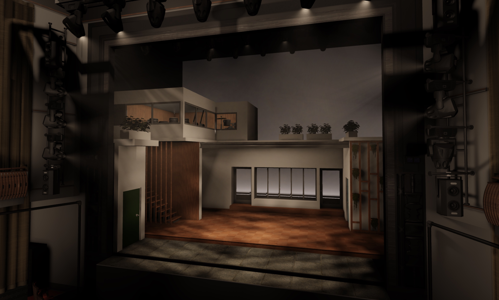
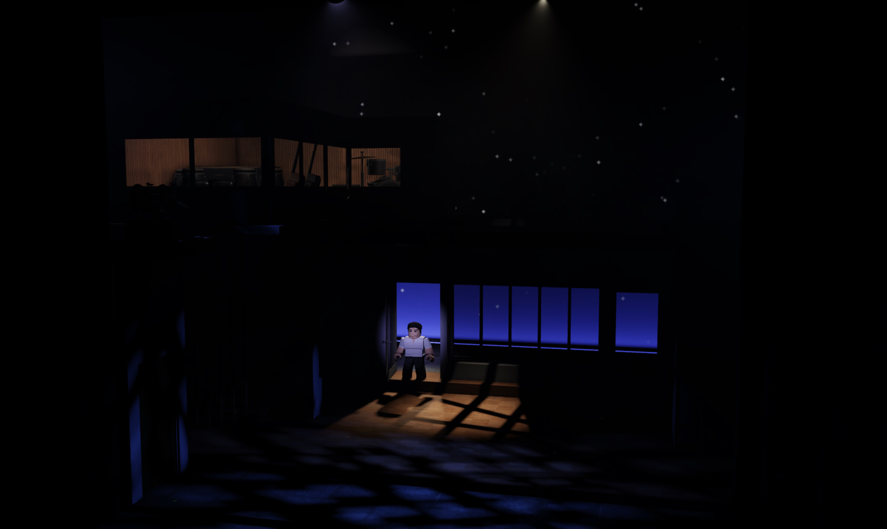
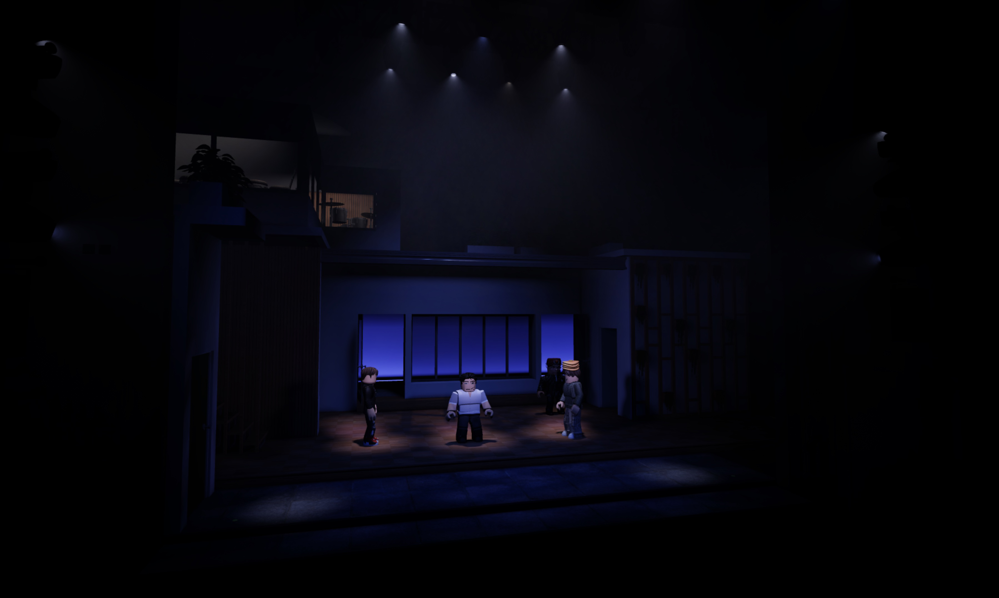

8.15
2 Projects
2.1 Theatre
I have created several Roblox-recreations of musicals, sometimes with original designs and sometimes replica productions.
2.1.1 Merrily We Roll Along
I recreated the 2023 Broadway production of Merrily We Roll Along on Roblox, replicating the set and lighting for the opening number of the show.



Actors are not wearing costumes; their outfits are not indicative of the production.
2.1.2 Cabaret
I designed an minimalist production of the opening number of Cabaret, "Wilkommen", on Roblox. The lighting and set design are entirely original.
The production has been updated since the current archival recording was made; a newer recording may be released in the future.An archival recording of the show is available here.